Billie Case Study¶
- Age: 5.5
- Weight: 60 lbs
- Prosthetic: Full limb, front left
- Amputation: Full
- Reason: Cancer
- Goals: Hikes, long walks, and running
Brief Summary of Animal Goals¶
Due to cancer, Billie's left thoracic limb was fully amputated, meaning there is no remaining bone structure to support a partial prosthetic. We are therefore creating a full front-limb prosthetic. Billie and her owner's goals are long walks, hikes, and swimming.
Materials¶
Main Socket / Chest Plate: PETG
- Strong but not brittle: handles weight and impact without cracking.
- Durable: good for repeated stress and outdoor use.
- Heat and moisture resistant: won't warp like PLA (recommended by the guest panel).
Leg: Aluminum Rod
We selected a 1" x 36" aluminum round tube.
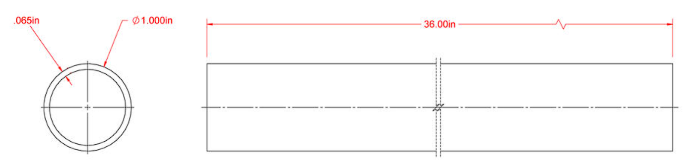
- The thinner diameter and wall thickness provide a lightweight leg that won't cause unnecessary strain, while staying durable and not flimsy.
- More sturdy and waterproof than 3D printing or using a PVC pipe.
- Easier to obtain than carbon fiber, and better for cutting to a custom length and drilling holes for screws.
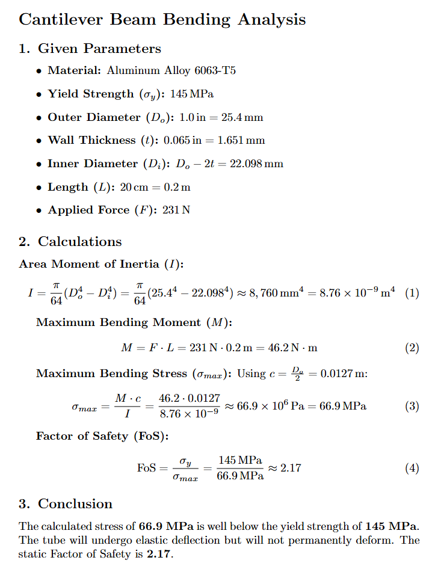
Lattice Paw: TPU
- Flexible, stretchable, and durable; capable of bending and twisting without breaking, with good abrasion resistance. The lattice structure acts as a spring.
3D-Print Files¶
CAD Files
MeshMixer Files
nTop Files
Raw 3D-Scans
The attachment for the socket was made in Onshape. Given that the socket material is PETG, we used a clearance of 0.5-0.7 mm (0.014") for a tube with a 1" external diameter and 0.065" wall thickness, and 8 mm screws (holes with a 7.8 mm diameter for self-tapping).
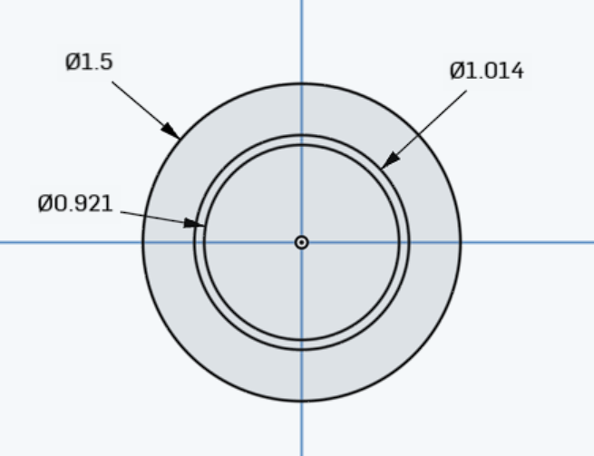
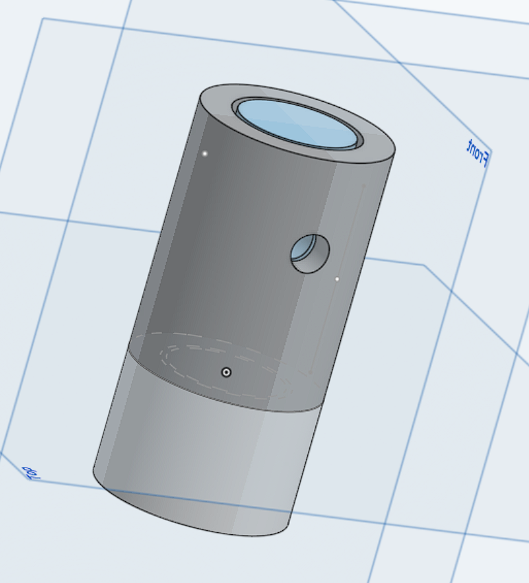
Print and scan files include the Billie 3D scan, a second Billie 3D scan, and the Billie nTop file.
Iteration in Design Process and Challenges Faced¶
Design Iterations
1. Socket. Initially the socket only covered the area where the leg part attaches to the body, but after talking to the expert judges we changed the design so the socket covers more of the body and attaches to the harness with 2 straps instead of 3, preventing slipping and improving stability.
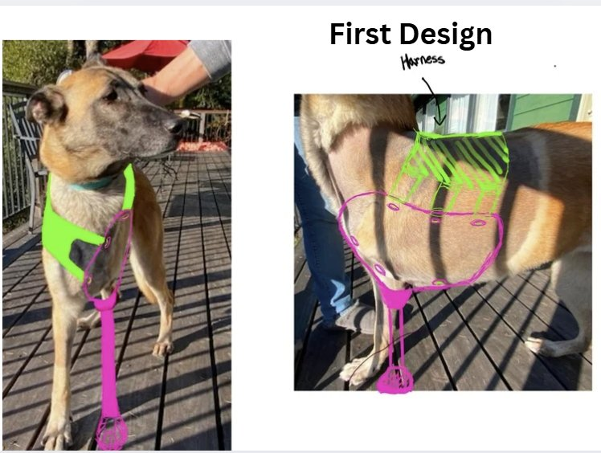
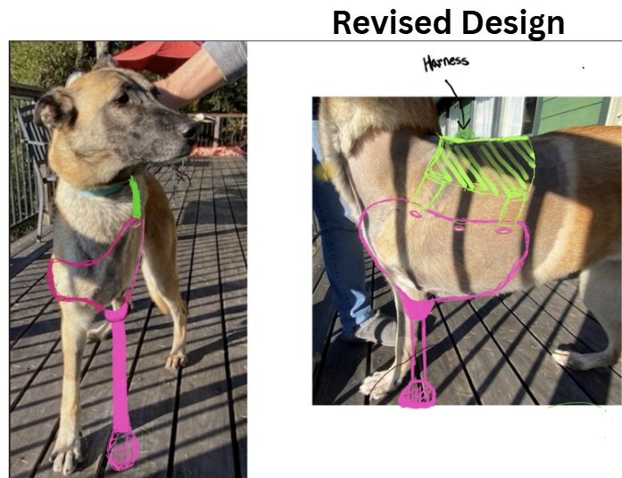
After printing it, the socket didn't fit as well as expected, so we made more changes — moving the connection point of the leg and body further to the right and bringing the socket higher up her body to make it more secure.
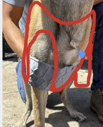
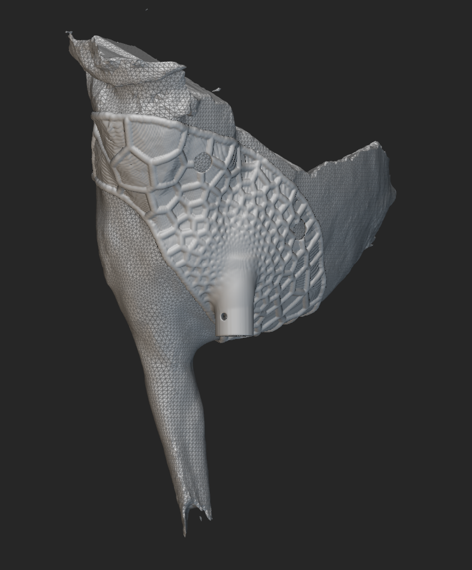
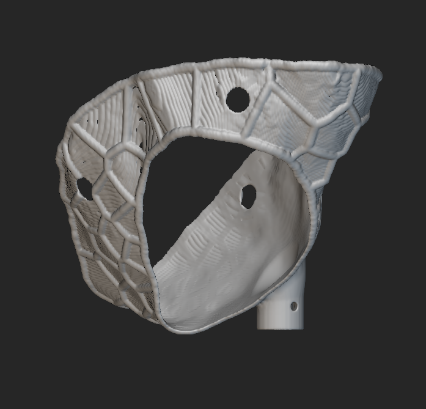
Next steps after the following fitting are to determine whether the attachment point is too close to the midline (and whether the inside edge of the hole restricts the right shoulder joint), and whether the vertical attachment angle suits Billie. Her right leg is currently shifted toward the center to compensate for her weight; we expect the extra support to shift it away from the midline, but this may need adjustment. The aluminum pipe also needs to be cut to length after measuring the socket-to-paw attachment distance during a fitting, accounting for how length affects her ability to sit while wearing it.
2. Paw. After printing the paw, we made changes to make it smaller, lighter, and more compressive: the width went from 3" to 2.5", the height of the upper part from 2" to 1.5", and the lattice perimeter area from 0.5" to 0.25".
- Unlike linear patterns, which have weak points and compress more in certain directions, a gyroid has uniform stress, making it better at distributing load from multiple directions.
- Finite Element Analysis is unreliable for TPU because of its hyperelasticity and nonlinear behavior; best practice is physical iteration. Stiffness can be modulated with cell size and midsurface offset.
- The modified Onshape file was imported into nTop to add the lattice.
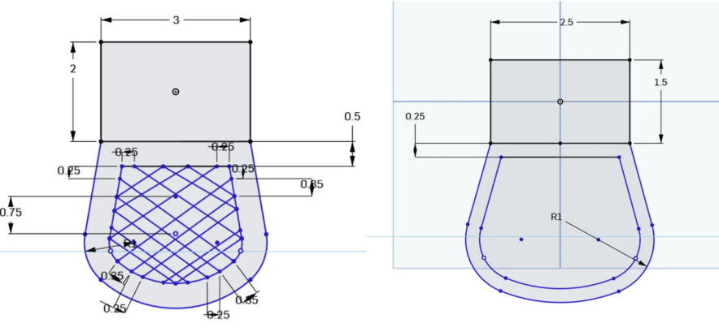
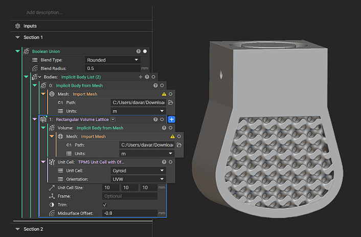
Challenges
- Running Finite Element Analysis for the TPU paw was difficult because SolidWorks' FEA lacks a TPU material. We substituted polyurethane, but since FEA is unreliable for TPU anyway, we relied heavily on iterative testing.
- When we printed the paw, every part was compressive except the bottom — which is where we most need compressibility. To fix this, we edited the shell and infill settings of the 3D printer and modeled the lattice in nTop for a more even result.
- Billie's socket also didn't fit well, so we got another scan. However, the most complete scan didn't capture enough of her neck and upper torso to raise the socket as much as we wanted. We will either get another scan or merge the new scan (for accuracy) with the old one (for coverage). Ideally, the hole for Billie's right leg should be large enough to fit around her shoulder joint rather than over it.
Assembly of Full Design¶
Because of order delays and our commitment to delivering a safe, fully functioning prosthetic limb to Billie, we did not have enough time to assemble a full design. However, we will continue to work on this project.
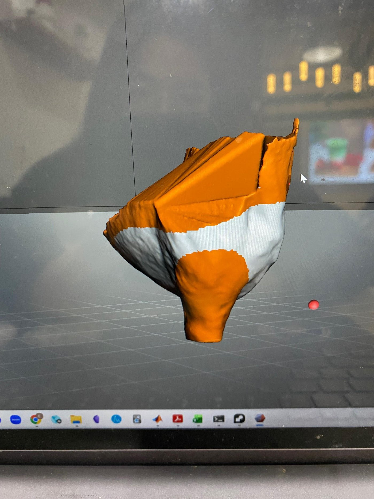
The in-progress assembly is available in our Onshape document.
Referenced Papers/Sources¶
- PMC8654758 — veterinary prosthetics research
- Veterinary Paper — 3D-printed prosthetics study (2025)
- PMC12767463 — clinical application of 3D printing in canine prosthetics
- ScienceDirect — prosthetic materials and design article
Helpful videos:
Team¶
Erin Wong
Prosthetics Engineer
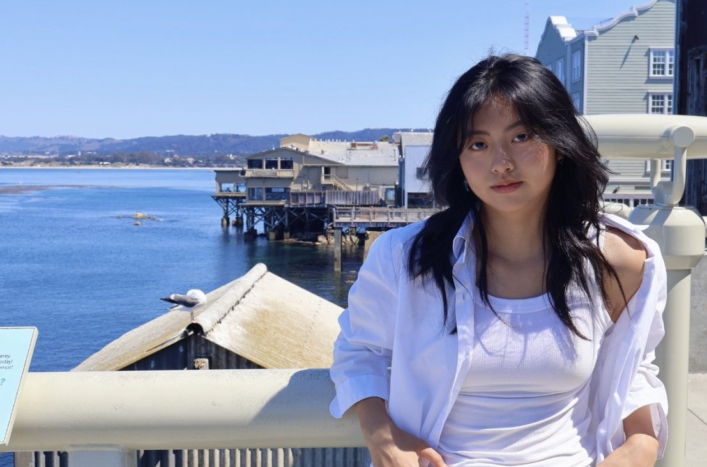
Chloe Liang
Prosthetics Engineer
Contributed to design prototyping, socket fabrication, and prosthetic iteration for the Give a Paw project.
LinkedIn →Paleah Shvarts
Prosthetics Engineer
Lisa Liu
Prosthetics Engineer